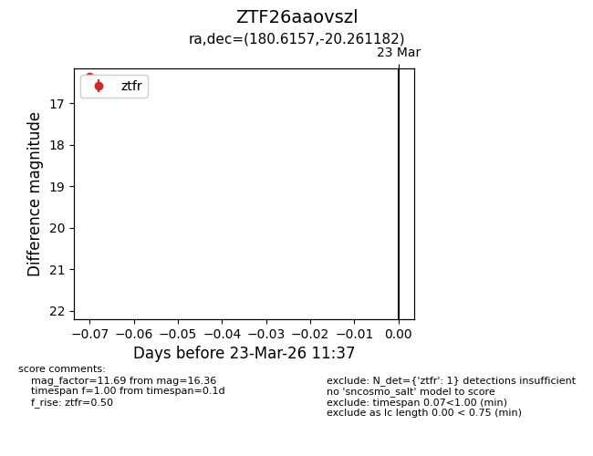
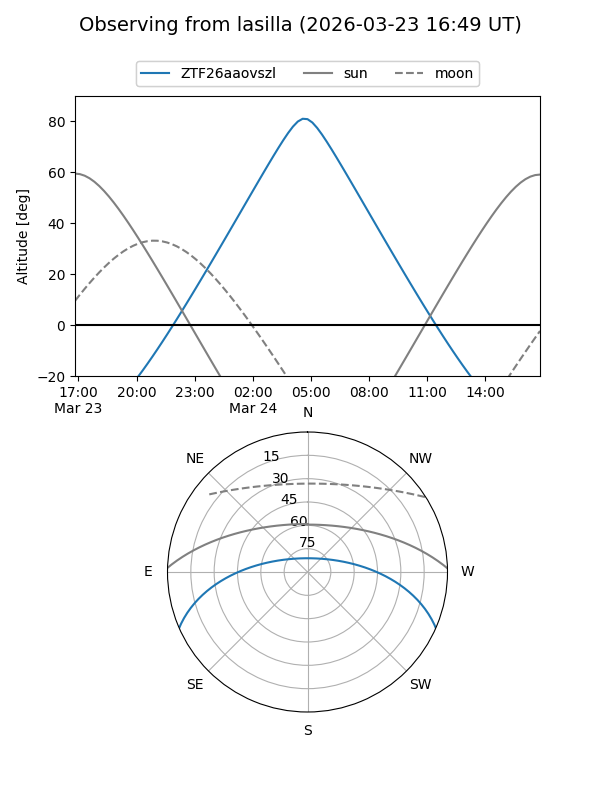
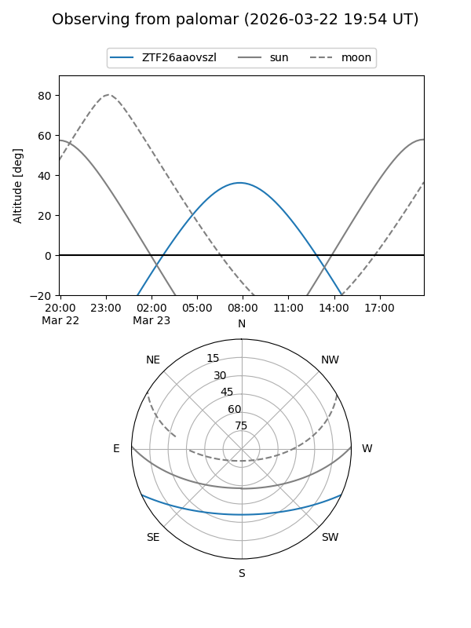

ZTF26aaovszl
Target ZTF26aaovszl at 2026-03-23 11:39
Aliases and brokers:
FINK: link
Lasair: link
ALeRCE: link
alt names
ZTF26aaovszl (ztf,fink_ztf)
Coordinates:
equatorial (ra, dec) = 180.6157,-20.26118
equatorial (HMS+DMS) = 12:02:27.76,-20:15:40.26
galactic (l, b) = (287.6119,+41.14909)
Flags:
Photometry:
last ztfr=16.36
1 ztfr detections
Lightcurve

Visibility


Additional plots